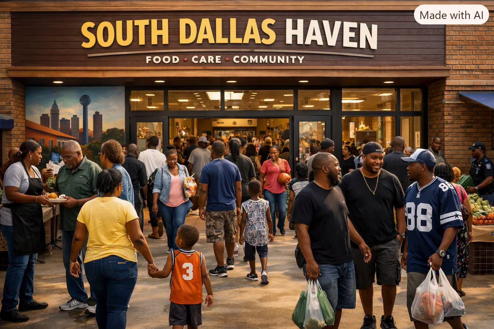

ARTICLE #002 · NOVEMBER 2026
The Community Haven: A Federally Funded Blueprint for National Renewal
Willis Butts · Terra Nova Development

What a Typical Haven Looks Like
A Community Haven is not an office, a shelter, or a government building. It is a living neighborhood hub — warm, open, active, and woven into the daily life of the community. Every Haven feels familiar, human, and welcoming.
Walk through the doors of Oak Cliff Haven, Corktown Haven, Roosevelt Row Haven, or Harlan Haven, and you’ll see the same core features:
1. Frictionless Food Abundance
Every day, local grocery stores, restaurants, bakeries, farms, and individuals drop off food — fresh produce, packaged goods, prepared meals, bakery items, surplus inventory, and seasonal harvests. Much of this food may be approaching its sell‑by date, but is still perfectly safe, nutritious, and valuable. Instead of being thrown away, it becomes immediate abundance for the community.
Over time, Havens evolve from surplus receivers into direct sources of fresh food. Community gardens, hydroponic farms, vertical agriculture, orchards, and neighborhood greenhouses begin producing fruits, vegetables, herbs, and greens year‑round. Apprenticeships in agriculture and horticulture help residents grow food for their own Haven and neighboring Havens.
A Full Supermarket Experience — Free to All
Each Haven includes a complete food distribution center modeled after a modern supermarket. It has:
- non‑refrigerated sections
- refrigerated sections
- frozen sections
Everything is organized, clean, and easy to navigate — just like a grocery store.
Everything Is Free — No Price Tags, No Checkouts
There are no price tags, no scanners, no checkout lanes, and no payment counters. People simply walk in, pick up what they need, and walk out.
This single feature produces enormous benefits:
- dramatically reduced labor costs
- no shrinkage losses
- no inventory tied to profit
- no stigma
- no bureaucracy
The Haven supermarket becomes a pure distribution center, not a business.
Repurposing Empty or Operating Supermarkets
A vacant supermarket is ideal for conversion — but even an operating supermarket can be transformed without shutting down. The process is simple:
- remove price tags
- remove checkout lanes
- reorganize aisles
- add Haven service wings
- integrate donation intake stations
Traditional supermarkets like Kroger, Albertsons, Safeway, Publage, and H‑E‑B can repurpose unused aisles. Big‑box stores like Walmart, Costco, Target, and Home Depot are perfect for large‑scale Haven operations.
No Barriers, No Stigma, No Gatekeeping
There are:
- no forms
- no eligibility tests
- no income verification
- no limits
- no stigma
People simply walk in and take what they need.
2. Non‑Food Essentials
Beyond food, every Haven operates a Non‑Food Abundance Hall — a massive, organized space filled with everyday items donated by local businesses and individuals.
Anything you can find in a Walmart, Costco, Target, or Home Depot, you may find in a Haven.
This includes:
- furniture
- appliances
- tools
- electronics
- toys
- clothing
- hygiene items
- baby supplies
- automotive goods
- sporting equipment
- seasonal items
- pet supplies
- OTC health items
- craft supplies
- entertainment media
- kitchenware
- bedding
- luggage
Age‑Verified Items (Tobacco, Alcohol, and Similar Goods)
Some donated items are legal but age‑restricted. Havens adopt a national policy to handle these safely:
- Age verification required
Separate distribution area
Communities may choose not to accept them
Items can be redirected or exported
Community input guides decisions
This keeps Havens safe, legal, and respectful of local culture.
Freeing Homeowners From Storage Burdens
Homes everywhere are filled with unused items — furniture, tools, toys, appliances, décor, electronics. These items sit for years, creating clutter and stress.
The Haven solves this instantly.
Homeowners drop off anything useful — no scheduling, no listing, no haggling, no guilt. Items that once collected dust become immediate value for someone else.
Homes become cleaner. Storage units become unnecessary. Waste is reduced. Families feel lighter.
A Community‑Wide Give & Take Ecosystem
There is no cost, no paperwork, and no limit. People take what they need. People give what they can.
The flow of abundance becomes self‑sustaining.
3. Rest Areas
The Haven includes a Rest Wing — quiet, safe, open spaces where anyone can lay down an air mattress, grab a blanket, and rest for ten minutes or ten hours.
These spaces become a pressure‑relief valve for society.
They serve:
- the homeless
- low‑income individuals
- people escaping abuse
- traveling families
- workers between shifts
- students needing a break
- anyone who needs peace
No one is ever questioned as to why they need rest. No one is screened. No one is judged. No one is turned away.
Integrated Support
The Rest Wing connects directly to:
- showers
- dressing rooms
- laundry
- lockers
- kitchen facilities
- prepared food
- community tables
- comradery
A person can walk in exhausted and within minutes have:
- a safe place to lie down
- a warm meal
- a shower
- clean clothes
- a secure place for belongings
- human warmth
The Emotional Impact
The feeling of well‑being, safety, and human warmth alone eases suffering. When people have a place to rest without fear, their minds calm, their bodies recover, and their ability to make good decisions improves.
The Rest Wing becomes:
- a stabilizer
- a sanctuary
- a reset button
- a place where dignity is restored
4. Kitchen Facilities
Every Haven includes a Community Kitchen — a warm, active, welcoming space where nourishment is constant and community is built through shared meals and shared work.
Healthy Scheduled Meals
Meals are served multiple times a day — breakfast, lunch, dinner, and late‑evening meals.
These meals are free to all comers. No one is turned away or asked to show need.
Healthy meals support physical well‑being, emotional stability, and community connection.
No Food Policing
Snacks like candy, cookies, chips, pastries, and soda are freely given when donated. People choose what they want. Autonomy matters.
Food Is Always Available
Warm dishes, cold meals, snacks, drinks, fruit, and ready‑to‑eat items are available at all times.
Variety in Meal Experience
Some Havens offer buffet‑style service. Others offer a full restaurant experience with servers taking orders at the table.
This isn’t luxury — it’s respect.
Community Participation
People help cook, serve, clean, teach, and learn.
Local Culture Shapes the Menu
Each Haven reflects the tastes of its neighborhood — Tex‑Mex, Caribbean, Somali, Vietnamese, Polish, Native American, Filipino, Middle Eastern, and more.
A Place of Comradery and Well‑Being
The kitchen becomes one of the most healing spaces in the Haven.
5. Recreation and Fun
A Haven is also a place of joy. Recreation is essential for mental health, family bonding, and community connection.
Games and Activities
The Recreation Wing includes:
- big‑screen TVs
- video game consoles
- card and board games
- pinball
- foosball
- pool tables
- air hockey
- skee‑ball
- darts
- indoor mini‑sports
Live Music, Karaoke, Sing‑Alongs, and Dances
Havens host:
- live bands
- acoustic nights
- karaoke
- sing‑alongs
- DJ nights
- community dances
- cultural music events
- open‑mic nights
Music brings people together. It lifts spirits and creates shared memories.
Reclaiming America’s Forgotten Fun
Arcade machines, pinball tables, pool tables, sound systems, and recreational equipment sitting in warehouses are recovered and repurposed for free entertainment.
A Safe Place for Youth
Kids and teens get a safe, positive place to spend time.
A Social Hub for Adults
Adults gather to watch sports, play games, dance, sing, and relax.
Community Nights
Movie nights, tournaments, holiday events, karaoke contests, dance nights, and more.
Fun Is Part of Healing
People who laugh together heal together.
6. Hosting Events
Every Haven includes a flexible Assembly Area for gatherings of all kinds.
A Space That Transforms
With folding chairs, modular seating, portable stages, and sound systems, the space can be rearranged in minutes.
Events the Haven Can Host
- speeches
- sermons
- weddings
- memorials
- educational talks
- workshops
- town halls
- cultural celebrations
- poetry readings
- music performances
- youth presentations
A Place for Learning
Workshops cover health, finances, job skills, parenting, technology, gardening, cooking, safety, and more.
A Venue for Life’s Milestones
Weddings, birthdays, graduations, baby showers, and reunions — all free and accessible.
Reclaiming Stored Potential
Thousands of chairs, stages, PA systems, and event equipment sitting unused nationwide are repurposed for Haven events.
A Center for Community Life
The Assembly Area becomes the beating heart of the neighborhood.
7. Local Staffing and Local Identity
Every Haven is staffed by local people — residents, tradespeople, teachers, nurses, volunteers, elders, and youth.
A Haven in Every Neighborhood
Havens are neighborhood‑scale, human‑sized, and easy to reach. Every neighborhood could have a Haven nearby, creating a dense network of support.
Local People Running Local Havens
Because Havens are neighborhood‑based, they are operated by people who:
- know the area
- understand local culture
- recognize community needs
- speak the languages of the neighborhood
- care about the people they serve
Local Identity, National Mission
Each Haven has its own identity — shaped by its neighborhood — but all Havens share a national charter guaranteeing universal access, transparency, ethics, compassion, and dignity.
8. A Common Charter, Local Autonomy
All Havens share a national charter ensuring transparency, ethics, universal access, and shared mission — while retaining local autonomy.
9. The Effect on the National Economy
As Havens are established across the country, the cost of living in each Haven‑supported area begins to fall.
This is healthy deflation — something the United States has never seen.
Healthy Deflation
When people no longer need to spend money on food, basic goods, entertainment, or essential services, their monthly expenses drop dramatically.
The More Havens, the More Deflation
Each new Haven reduces financial pressure on surrounding neighborhoods. As Havens multiply, the effect compounds.
Rising Wealth for Ordinary Citizens
As the cost of living falls, the wealth of citizens rises — especially for those at the lowest economic levels.
People gain:
- savings
- stability
- breathing room
- the ability to plan
- the ability to invest
- the ability to start businesses
- the ability to build a future
No Confiscation, No Punishment
All of this occurs without confiscating anything from those who have already accumulated significant wealth.
The Haven model does not seize assets or punish achievement. It creates new wealth by eliminating unnecessary expenses.
A Stronger National Economy
Healthy deflation leads to:
- lower stress
- higher productivity
- stronger families
- reduced crime
- increased entrepreneurship
- more stable local businesses
- reduced government crisis spending
The Haven system becomes a national economic engine, not a cost.
Global Overflow Distribution: Extending Abundance Beyond Our Borders
As Havens mature, a natural effect emerges: overflow.
Some items accumulate — not because they lack value, but because they are:
- too specialized
- too bulky
- too niche
- too numerous
- or simply not in demand locally
These items can be life‑changing somewhere else.
A National Overflow Collection System
The U.S. government collects overflow, sorts it, bundles it, and exports it worldwide.
Exporting Abundance
Shipments go to developing nations, disaster zones, refugee communities, impoverished regions, and countries rebuilding after conflict.
A Goodwill Effort
Instead of exporting war or debt, the U.S. exports:
- abundance
- stability
- tools
- clothing
- technology
- opportunity
- dignity
Strengthening Global Relationships
Nations receiving Haven overflow develop stronger ties and deeper trust.
A Planetary Network of Abundance
Other nations begin building their own Haven systems.
The Promise of a New Era
The Community Haven redefines what government can be: not a bureaucracy of control, but a mechanism of compassion.
When every person has food, shelter, healthcare, and purpose, poverty disappears. When poverty disappears, crime declines. When crime declines, communities heal. When communities heal, politics evolve. When politics evolve, humanity advances.
The Haven is not a dream — it is a design. And it is ready to be built.